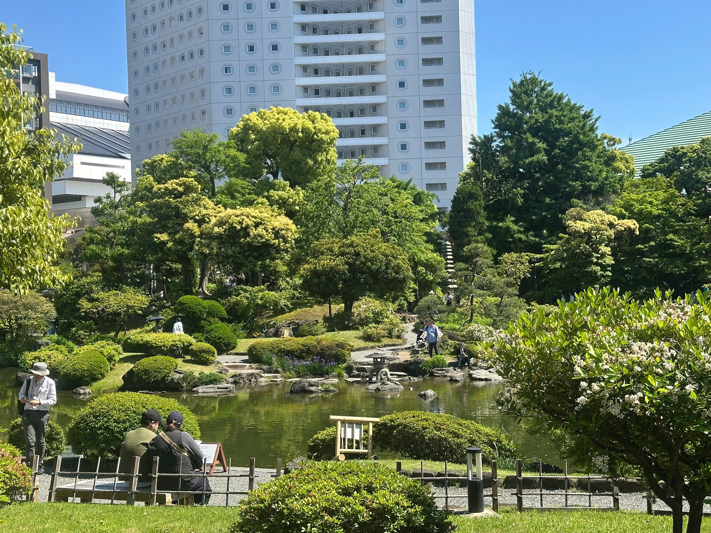
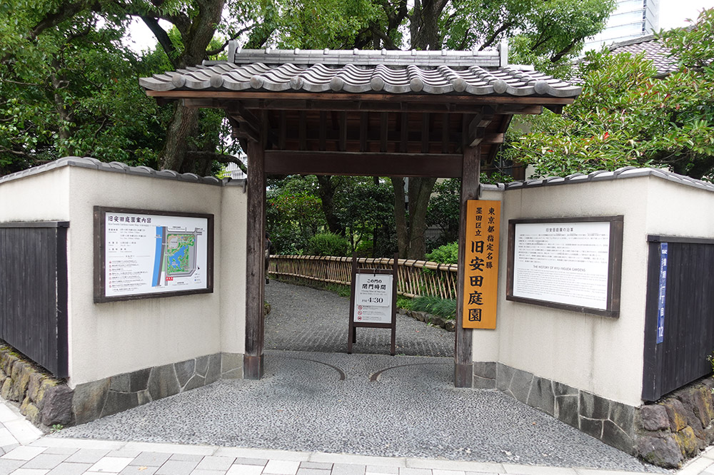
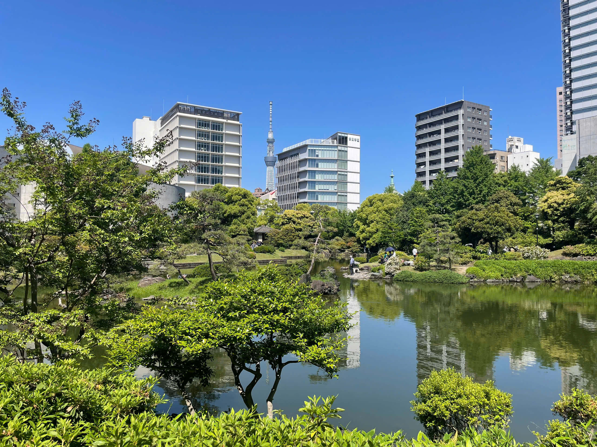
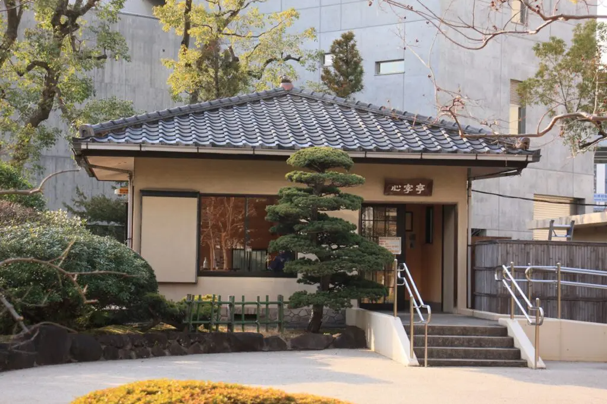
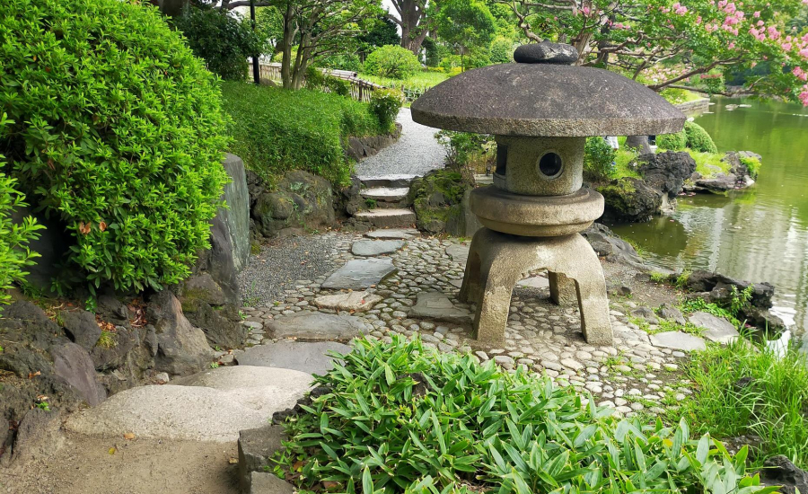

旧安田庭園は、元禄年間（1688〜1704）に造られた典型的な大名庭園です。明治時代に安田財閥の所有となり、現在は東京都の名勝に指定されています。両国の高層ビルや東京スカイツリーを背景に、潮入の池を中心に四季が静かに移り変わります。入園無料、いつでも訪れることのできる、東京で最も贅沢な「無料の風景」のひとつです。
基本情報
Access
両国駅（JR総武線）徒歩約6分
都営大江戸線 両国駅 徒歩7分
都営大江戸線 両国駅 徒歩7分
Hours
9:00 — 17:00
最終入園 16:30
最終入園 16:30
Entry
無料 · Free
団体は事前連絡を
団体は事前連絡を
見どころ

心字池
国技館側の西門から入り、風情のある竹垣に囲まれた通路を抜けると、大きな池が見えてきました。この池は、心字池と言って「心」の字をかたどっているそうです。

池泉回遊式庭園
池の周りを巡る散策路。四季折々の表情が楽しめる。

西門（入口）
趣のある木造の門から庭園散策が始まる。

スカイツリーを望む
庭園内から見える東京スカイツリーの絶景。古と新が一枚に収まる。

心字亭
東門側にあるトイレの近くには、広場を挟んで「心字亭」という休憩所もあり、９時３０分から１６時３０分まで利用できます。ここは、池や庭園も見渡せるので優雅な雰囲気があり、のんびりできます。

石畳の散策路
緑豊かな園内をゆっくり歩くのがおすすめ。
おすすめルート
- 西門から入園
- 心字池をぐるりと巡る
- 心字亭で休憩
- 東側へ移動しスカイツリーを眺める
- 北門方面へ抜ける
- 両国国技館・江戸東京博物館へ続く
高層ビルに囲まれながらも、江戸の風情を感じられる特別な庭園。